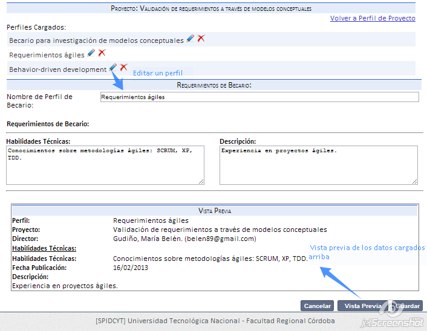

Esta pantalla se propone agregar un nuevo perfil de becario a un proyecto.
Agregar:
- Completo los datos principales.
- Vea la vista previa (como será presentado a los visitantes del sitio).
- Guarde el perfil de requerimientos.
Editar:
- Haga click sobre el perfil que desea editar.
- Modifique los datos.
- Vea la vista previa (como será presentado a los visitantes del sitio).
- Guarde el perfil de requerimientos.

Eliminar:
- Haga click en eliminar el perfil.
- Confirme la operación
Created with the Personal Edition of HelpNDoc: Easily create iPhone documentation